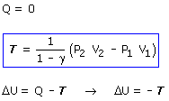

Adiabática (No se intercambia calor:)
Esta forma de calcular no suele utilizarse en la práctica
 |
 |
Parece que hay dos fórmulas del trabajo en una adiabática
T = (P2·V2 - P1·V1)/(1 - γ)
T = -n·cv·(T2 - T1)
Pero por increible que parezca las dos expresiones son iguales